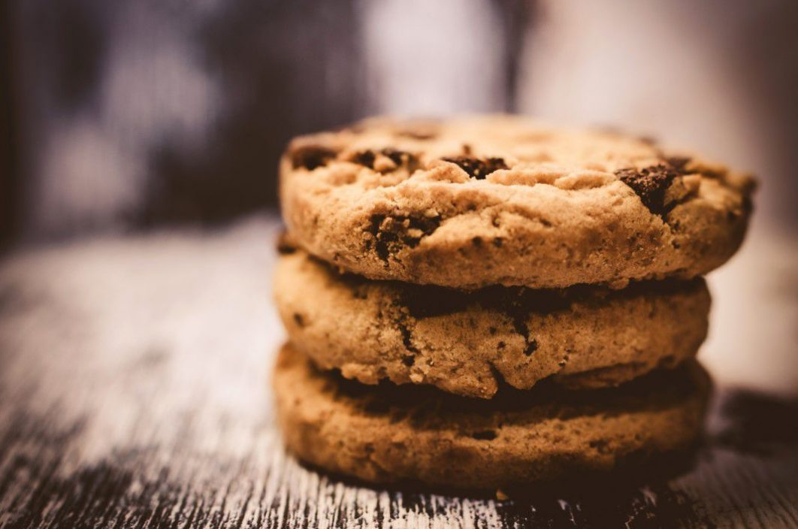

Ahh, the classic all American Chocolate Chip Cookie. Simple yet deceptive in how complex you can go to make the taste better, its a fan favourite of cookie lovers or for you fancy types "biscuit" lovers across the world. Give me a glass of milk and some of these cookies and I'll go off to sleep in an instant.
For one batch (yields 48 servings) there are roughly 13 ingredients.
Step 1: Gather your ingredients, making sure your butter is
browned, and your eggs are cold. After you brown your butter make sure to
put it in the fridge so that it just starts solidifying again but not too
long.
Step 2: Preheat the oven to 350°F or 175°C. Beat buter, white sugar
and brown sugar in a large bowl with an electric mixer until smooth and
creamy. You essentially want to create a cookie dough.
Step 3: Beat in eggs, one at a time, then stir in the vanilla.
Step 4: Dissolve baking soda in hot water; add to batter along
with salt and mix until combined.
Step 5: Stir in flour, protein powder, chopped dark chocolate,
curshed walnuts and chocolate chips until a soft dough forms. If it becomes
too dry add in some more butter.
Step 6: Drop rounded spoonfuls of cookie dough 2 inches apart onto
an ungreased baking sheet.
Step 7: Bake in the preheated oven until edges are lightly browned,
about 10 minutes. You'll know that the cookies are ready once you can
rotate them on the tray without them breaking or being mushy on the edges.
Its good that they are mushy or playey in the middle. Thats what we want.
If you kept it in the oven for too long and the center goes dry and hard
well its too hard.
Step 8: Make sure to cool the cookies on a baking sheet for a couple
of minutes for its texture to really set in. Now your cookies are donezo.